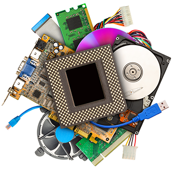

hardware

.1. Identifique e explique todos os conectores externos frontal e traseiro do computuador.
Entrada e saída de áudio
portas USB
(é utilizado para a conexão de vários dispositivos sendo
1.0 com 1,5 Mb/s
2.0 com 480Mb/s
3.0 com 4.8Gb/s.)
VGA ( Para saída de vídeo, conexão para tv ou monitores)
PS2 (Utilizada para a conexão de teclados e mouses antigos)
P2 (Utilizado para a conexão de fones)
P3 (Para microfone com ou sem fone)
MIDI port (facilita a comunicação em tempo real entre instrumentos musicais eletrônicos, computadores e dispositivos relacionados)
LAN (conexão do cabo de rede)
Paralelo port (utilizada antigamente para impressoras)
Serial comunications (Servia para a utilização de outros dispositivos, porém foi substituído pelo usb)
Line in (serve para conectar um dispositivo de áudio externo)
7. Comente sobre SETUP.
Bastante comum no mundo da computação, o setup é uma configuração que permite que o utilizador faça alterações em determinados programas, para que eles funcionem de forma mais adequada às suas necessidades. Programas como o Google Chrome, ou mesmo sistemas operacionais como o Windows 8 possuem diversas opções de setup.
8. Comente sobre CMOS.
Complementary metal–oxide–semiconductor, mais conhecido pelo seu nome comercial CMOS, também sendo nomeado como complementary-symmetry metal–oxide–semiconductor, em português metal-óxido-semicondutor complementar e metal-óxido-semicondutor de simetria complementar. Wikipédia
9. Defina Barramento e seus 3 tipos.
Geralmente, cada barramento é constituído por 50 a 100 linhas físicas distintas, classificadas em três subconjuntos funcionais:
o barramento de endereços (também chamado de barramento de endereçamento ou barramento de memória)
é unidirecional e transporta os endereços de memória aos quais o processador quer acessar para ler ou escrever um dado; o
barramento de dados
é bidirecional e veicula as instruções provenientes do processador ou indo para ele;
barramento de controle (também chamado de barramento de encomendas)
é bidirecional e transporta as ordens e os sinais de sincronização provenientes da unidade de comando e indo para o conjunto dos componentes materiais.
10. Comente sobre BIOS.
O ou a BIOS é firmware, gravado em uma memória não volátil, usado para realizar a inicialização do hardware durante o processo de inicialização e para fornecer serviços de tempo de execução para sistemas operacionais e programas. Wikipédia
11. Qual a função da bateria de Litium?
Bateria íon-lítio ou bateria de ião lítio é um tipo de bateria recarregável muito utilizadas em equipamentos eletrônicos portáteis. Armazenam o dobro de energia que uma bateria de hidreto metálico de níquel (ou NiMH) e três vezes mais que uma bateria de níquel cádmio (ou NiCd).
12. Quais os tipos de conectores para unidade de armazenamento interna?
Ata
Sata
13. O que é slot de expansão? Dê seus tipos e comente cada um brevemente.
Os slots de expansão servem para que seja possível adicionar recursos à sua placa-mãe. Neles você conecta placas de rede, placa de som, modems, placa de captura
PCI
AGP
AMR
CNR
ISA
EISA
VESA
PCIe
22. Quais os tipos de conectores de:
a. Áudio
Os conectores mais empregados em áudio são o XLR de três pinos (Cannon), os conectores RCA e os TRS.
b. Vídeo
Conhecido como vídeo composto, o cabo RCA é o modelo mais básico de conectores de vídeo. Normalmente, esse cabo é composto de três pontas com cores distintas, sendo que duas delas são responsáveis pelo transporte de dados de áudio e a outra, de imagem
c. Rede
RJ11 C/RJ11W: 6P2C, para uma linha telefônica (6P4C com energia no segundo par)
RJ14C/RJ14W: 6P4C, para duas linhas telefônicas (6P6C com energia no terceiro par)
RJ25C/RJ25W: 6P6C, para três linhas telefônicas
d. Antena WiFi e Bluethooth
A Antena de 2.4GHz 3dBi (WiFi / Bluetooth / Zigbee) com Conector IPEX é compatível com os padrões 802.11b, 802.11g e 802.11n. Além disso, esta antena conta com um conector do tipo IPX13 fêmea. Logo, o dispositivo que irá receber esta antena, deve possuir um tipo de conector equivalente, porém macho.
Outros topicos